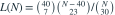

封闭总体共有未知整数N个个体。先标记M=40个并放回充分混合，再等概率不放回捕获n=30个，其中m=7个带标记。假定标记不影响捕获。N的MLE为？
- A
- B
- C
- D
我已思考，展开答案与解析
正确答案：A
- 似然

，N≥63且为整数。 - 相邻似然比 与1比较，符号取决于 。
- ，故似然增至171后下降，MLE为171。
易错提醒连续近似Mn/m不是整数参数的最终答案；这里应向下取整，而非四舍五入。
考后回忆 · 条件重建 · 回忆18；依据超几何似然独立推导
依据考试回忆重建；数字、选项和必要条件为补充设定，非原题。